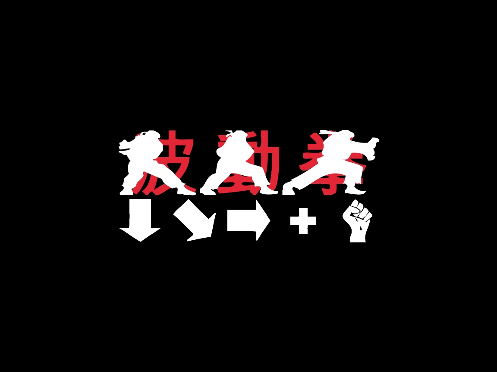
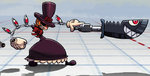
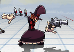
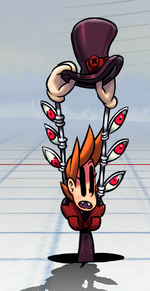
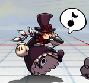

One of the more easier and earliest motion that is used for special moves is commonly called a fireball motion. This is in reference to Street Fighter using the motion for a fireball projectile. Many others also refer to it as a quarter-circle forward motion.
The notation is 236. Simply put it is to put the control stick in the down position and then roll it forward, which is why it's called a quarter-cricle forward. If your character is facing left then its 214. When beginning this motion can seem to be very difficult to perform especially because most fighting game engines require you to do it in a single motion.
Practice is important as in a regular match you would have to do this motion in real-time. In many games a button would follow this command such as 236A.
The 'A' stands for a button, many games use different systems for these buttons. The modern Street Fighters adapt a Light, medium, heavy button system. This involves a light punch and a light kick. LP (Light Punch), MP (Medium Punch), HP (Heavy Punch) and the same set for kicks, LK, MK, HK. Other games such as the Marvel vs Capcom series use a different system - a light, medium, heavy and launcher.
So following the 236 motion you would be required to push a button - 'A'. A is usually the light attack in most notations but it varies between games.

The one fighting game engine that I put the most time into was Skullgirls. One of the characters that I played was Peacock and she used this motion in different ways.


This attack has three different variants. The 236 LP version or light version (on the left) in Skullgirls had invincibility frames. This move has frames where when active the character Peacock cannot get hit.
The 236 MP version or medium version of the attack is the one in the middle. This version of the attack had throw invincibility. This meant for a few frames this move was invincible to throws, including super throws that required meter. This move also had an additional property which caused a wallbounce- which led to a unique followup.
The 236 HP version or the one on the right is the one that fires a projectile - up to three times when pressing the HP button a second or third time.

Peacock has another set of 236 commands, which I had to learn. It was the exact same motion but with the kicks buttons. These produced her teleport. This is an example of the same motion but with differing buttons. Not all characters or systems apply this use.
The light version of her teleport puts you in slightly in front of your opponent. The medium version of this teleport puts you directly in front of your opponent. The heavy version puts you directly behind.
With these variants you can cross-up your opponents when you use projectiles.

236 is an important motion, but to illustrate the importance of the directions, Peacock also has a 214. That is the exact same motion but in the opposite direction. If you try to do 236 from right to left, you will get the 314 command.
Likewise if you are trying to get the 314 command on the right side, you will get 236 if you are facing right to left. The importance of direction can confuse beginning players, as well as experienced when your opponent crosses you up. This is the impending doom projectile that will drop an object at specific distances from the sky depending on the button and how long you hold it.